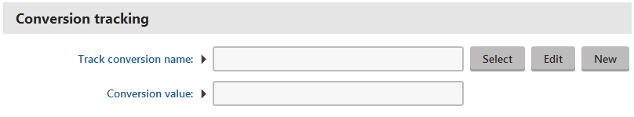
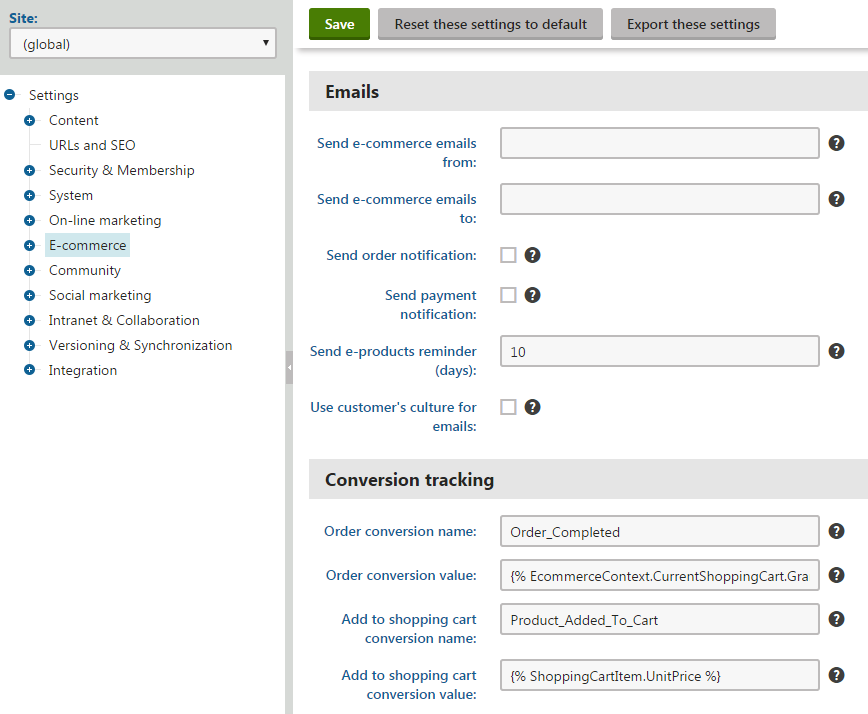
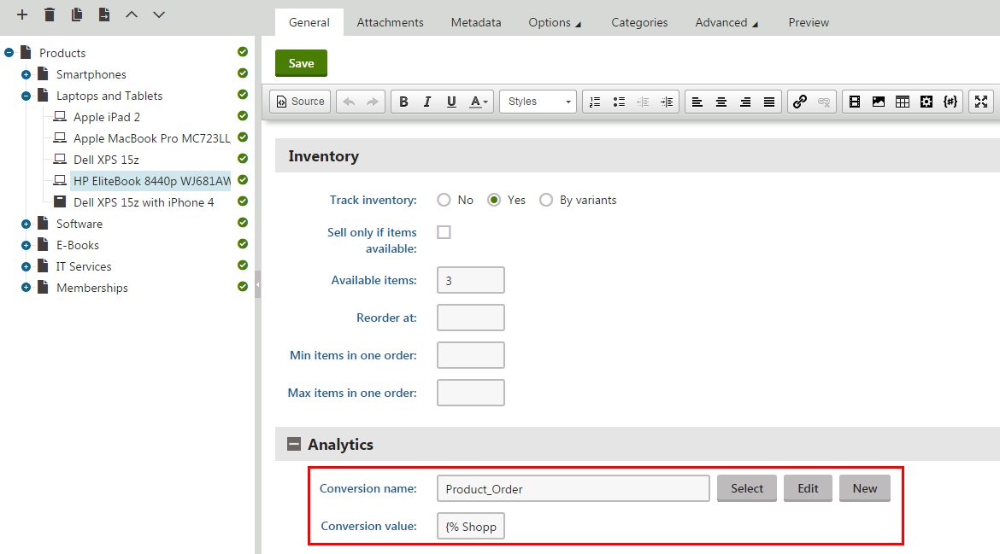

Configuring logging of actions as custom conversions
Web analytics provide a way to track actions performed by your website's visitors and record them as custom conversions. This is typically done for desired events that somehow benefit the website, such as registrations of new users, product orders, and subscriptions to newsletters.
You can configure the system to log custom conversions through various parts of the Kentico administration interface. When assigning custom conversions to actions, two possible types of fields are available.

Conversion tracking fields
The Track conversion name field is a custom conversion selector. You can either enter the code name of a custom conversion into the text box or click Select to choose from a list of custom conversions defined for the current site. If you type a name that does not match any conversion in the system, the system automatically creates a custom conversion with this name.
The New and Edit buttons allow you to create a new custom conversion or modify the properties of the selected conversion directly from the given part of the user interface.
The Conversion value field is optional and provides a way to set a number that will be recorded along with the custom conversion when the tracked action is performed. For example, you can use values to indicate the relative importance of the conversion, the profit generated by a single conversion hit or similar. The values are cumulative, i.e. when a conversion hit is logged, the system adds the specified value to the total sum previously recorded for the conversion. You may insert a Macro expression into this field to dynamically retrieve a value from the current site context. For examples of conversion value macros, please see the sections below dedicated to individual types of actions.
Kentico EMS required
Features described on this page require the Kentico EMS license.
Web part and widget actions
Many of the default web parts and widgets in Kentico allow users to perform important actions. Such components come with built-in support for custom conversion tracking. To configure a specific web part or widget instance to log actions as custom conversions, open its properties dialog and enter the appropriate values into the Track conversion name and Conversion value properties.The following table lists all types of actions that you can track as custom conversions through web parts:
|
Action |
Web parts |
|
User registration |
The system logs the conversion when a visitor successfully completes their registration using the given web part. There are multiple web parts that allow users to register on the website:
|
|
Newsletter subscription |
Newsletter subscriptions can be tracked as custom conversions through the Newsletter subscription or Custom subscription form web part. You can also track custom conversions for the widgets based on these web parts. |
|
Filling in an on‑line form |
Logs a custom conversion when users submit a form displayed by the On‑line form web part. |
|
Voting in a poll |
The Poll web part can log custom conversions whenever users vote in the displayed poll. |
|
Checkout process |
The Checkout process web part may be used to track two types of events:
You can assign custom conversions to these actions for specific instances of the shopping cart web part through the corresponding conversion name properties. You can also configure conversion values for these events for the entire website via the e-commerce settings. The Checkout process web part is obsolete. Use a web-part based checkout process instead, see E-commerce actions below. |
Entering conversion value macros into web part properties
The Conversion value properties of web parts only support numeric (decimal) values, so you cannot enter macro expressions directly. However, you can insert macros via the Edit value dialog, which you can open by clicking the  icon next to the given property.
icon next to the given property.
In the case of widgets, the system never resolves macros entered by users into properties. If necessary, macro expressions can be pre-set as the default values of widget properties by administrators. To do this, edit the given widget in the Widgets application on the Properties tab.
E-commerce actions
Custom conversions may be configured for e-commerce actions that occur on the entire website using the settings in Settings -> E-commerce. The following types of events can be tracked:
Order – logged when a customer successfully places a product order.
Add to shopping cart – occurs when a user adds a product to a shopping cart on the website.
You can assign a different custom conversion and value to each of these actions through the related conversion name and conversion value settings. The registration and order conversion name settings can be overridden for individual instances of the shopping cart web part through their corresponding properties.
If you wish to log the custom conversion value dynamically based on item prices, you may use macro expressions, for example:
Order conversion value: {% EcommerceContext.CurrentShoppingCart.GrandTotal %}
This macro is resolved into the total price of all items contained in the order, including discounts, tax and shipping. With this configuration, each Order custom conversion automatically stores the price of the given order as its value.
Add to shopping cart conversion value: {% ShoppingCartItem.UnitPrice %}
With this macro as the conversion value, the Add to shopping cart custom conversion logs the price of the specific product that was added to the shopping cart.

E-commerce conversion tracking settings
The settings described above allow you to track entire orders, but you can also log a separate conversion hit every time a product of a specific type is purchased:
Open the Products application.
Select a product in the tree.
On the General tab, assign a conversion through the Conversion name field.
Click Save.

Assigning a conversion to a specific product
The Conversion value field can be used to specify an appropriate value that will be recorded for each conversion hit. In addition to numeric values, you may enter macro expressions here, for example, {% ShoppingCartItem.UnitPrice %}. This macro allows the custom conversion to log the price of the given product as its value. The advantage of a macro is that it retrieves the price dynamically, including any potential discounts applied by the given customer.
You can also use the same approach to configuring different custom conversion settings for individual product options (via Product options -> edit a category -> Options -> edit a product option).
Custom conversion properties are not available for global products since each site has its own separate set of custom conversions.
Logging custom conversions for custom actions
Developers can write custom code that logs custom conversions through the API. This allows you to track any other types of actions in addition to the options listed above. Custom conversion logging requires knowledge of programming and the Kentico API.
See Logging custom conversions through the API for more information.